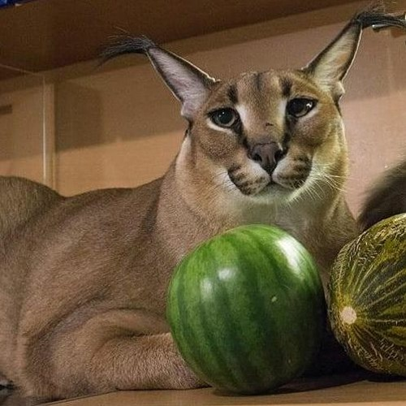

BIG FLOPPA PROJECT
The one and only, Big Floppa. He is here to make your day better!
‘Big Floppa’ or just ‘Floppa’ is a domesticated caracal – a medium-sized wild cat. They have the ability to jump higher than any other cat in my estimation. They are sometimes domesticated as their character lends itself to domestication. The species has been used to go hunting with people for centuries in Asia. The phrase ‘cat among the pigeons’ comes from caracals chasing pigeons on hunting trips in years gone by.
Floppa is not respoinsible for any of the henious acts people of the internet might be accusing him in.
Big Floppa Gallery